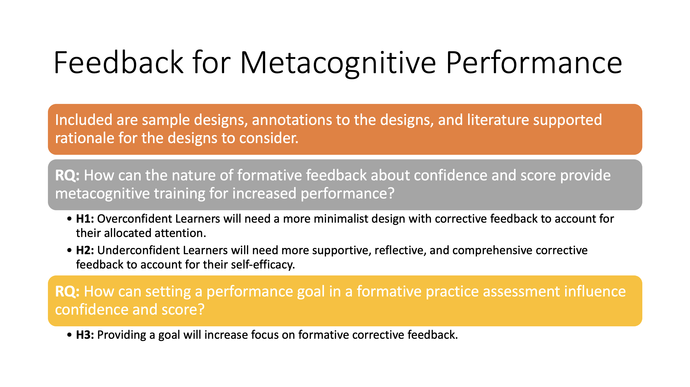
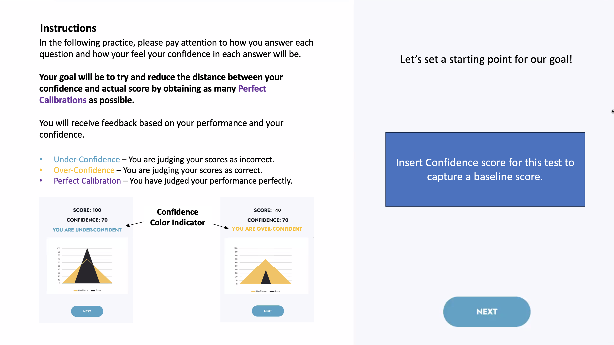

This study modified 3D Animation in the assets of the Unity store. For the AR development, we used a predefined HoloLens camera, spatial perception in the Mixed Reality ToolKit. Developers need to know the project setup for the AR environment. Unity supports clips for humanoid animations. After completing the Unity project, it can export a Visual Studio solution for AR deployment in a HoloLens. HoloLens can pair to the Visual Studio over Wi-Fi, and the apps can be successfully deployed in the HoloLens. After deployment, users can open applications and use gestures to interact with virtual objects. However, in the new location-based AR system, it is designed to change the apps based on different locations.
Integrating Augmented Reality and Location Tracking Systems
Jan 2022


The Q-Track NFER system API enables external applications to receive real-time location data from the tracking system. The NFER system is a TCP socket-based protocol allowing the tracking to software (the “server”) to send real-time location information to HoloLens (the “client”). The system operates on TCP port number 15752.

To connect HoloLens and the NFER system, first, you must make sure that HoloLens and the NFER system are in the same network; Second, run a real-time tracking software, Server TCP and Client TCP; After that, AR learning modules are shown in the AR device. After running the whole system, the real-time tracking software shows tags on the screen. The red dot is the reference tag, and the green dot is the user position in the lab. The left side of the figure shows the x and y coordination on the map. If the location matches a specific AR module, the AR module automatically runs in the HoloLens. The right side of the figure shows the apps on the HoloLens.